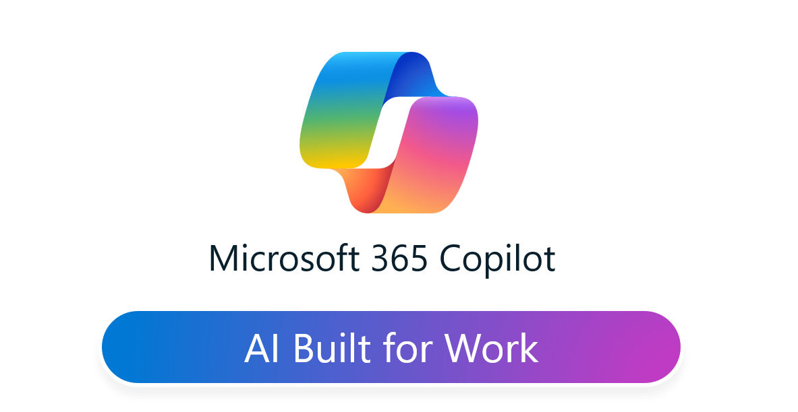
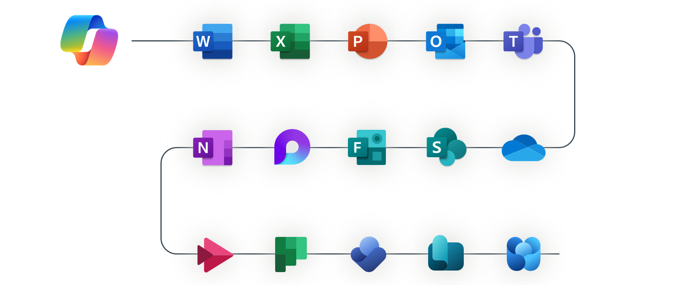
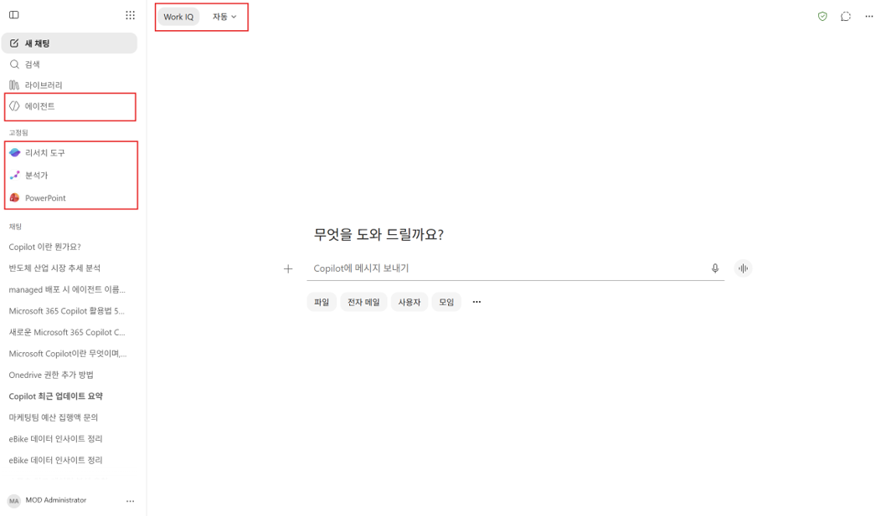
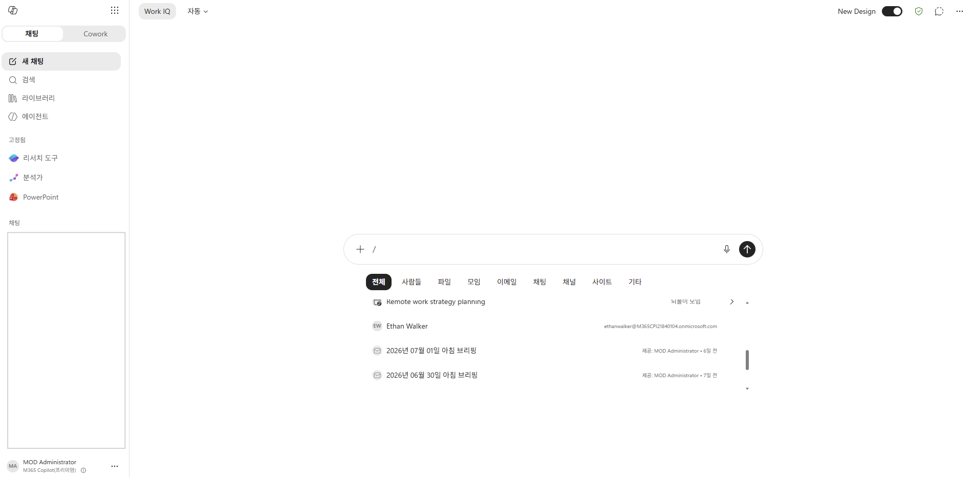
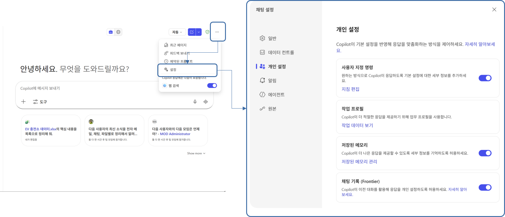
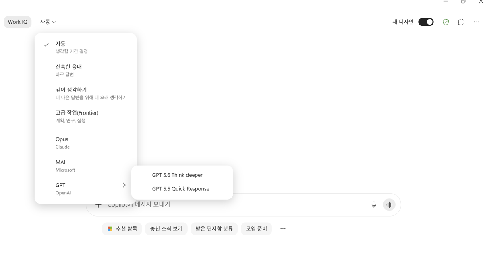
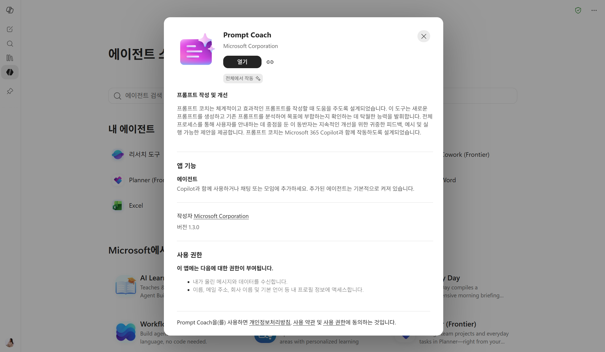
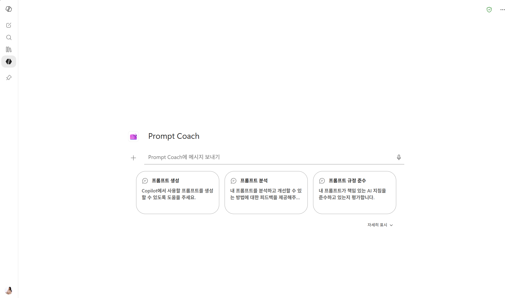

Know Before You Go to 던전
던전에 들어가기 전, 짧은 워밍업이에요. Microsoft 365 Copilot이 어떤 도구인지 직접 프롬프트를 하나씩 실행해보며 감을 잡아봅니다.

Microsoft 365 Copilot — 업무를 위한 AI, AI Built for Work
Microsoft 365 Copilot,
AI Built for Work
Microsoft 365 Copilot은 Word · Excel · PowerPoint · Outlook · Teams 등 Microsoft 365 앱과 서비스에서 사용할 수 있는 업무용 AI입니다.

Work IQ,
Copilot이 "나처럼" 일하는 이유
Work IQ는 우리가 일하면서 남기는 다양한 '업무 신호'를 이해하는 업무 지능입니다.
업무 맥락
메일 · 회의 · 문서 · 채팅에 담긴 내 업무의 흐름과 맥락
협업 관계
누구와, 어떤 방식으로 일하는지에 대한 조직 내 협업 신호
나만의 방식
이 신호들을 종합해 "나처럼" 이해하고 도와주는 Copilot
먼저 Copilot Chat을 열어볼까요?
오늘 실습은 모두 웹 브라우저에서 진행합니다. 아래 버튼을 눌러 Copilot Chat을 새 탭으로 열어두고, 이어지는 화면 안내를 따라와 주세요.
Copilot Chat 열기 →Copilot Chat 기본 화면
왼쪽은 메뉴, 가운데는 대화 공간이에요. 자주 쓰는 곳만 짚어볼게요.
새 채팅 · 검색 · 라이브러리
대화를 새로 시작하거나, 지난 대화·파일을 찾아볼 수 있어요.
에이전트
리서치 도구·분석가처럼 특정 작업에 특화된 도우미를 고를 수 있어요.
좌측 상단
Work IQ 사용 여부와 응답 방식(모델)을 선택하는 곳이에요.

"/"로 참조할 데이터 지정하기
입력창에 슬래시(/)를 입력하면 특정 파일·메일·모임 등을 콕 집어 참조로 지정할 수 있어요. "이 문서를 보고" 정확히 알려주는 방법이에요.

Copilot 개인 설정
오른쪽 위 ··· → 설정 → 개인 설정에서 Copilot이 나에게 맞게 응답하도록 조정할 수 있어요.
사용자 지정 명령
원하는 응답 방식·말투를 기본 지침으로 등록해둘 수 있어요.
저장된 메모리
자주 쓰는 정보를 기억하게 해 더 맞춤한 답을 받을 수 있어요.
작업 프로필 · 채팅 기록
업무 프로필과 이전 대화를 응답에 반영하도록 켜고 끌 수 있어요.

모델 선택하기
상단 "자동" 메뉴에서 상황에 맞는 응답 방식과 모델을 고를 수 있어요. 잘 모르겠다면 자동에 두면 Copilot이 알아서 골라줍니다.
신속한 응대 / 깊이 생각하기
빠른 답이 필요할 때와 더 오래 생각해 좋은 답이 필요할 때를 나눠 쓸 수 있어요.
고급 작업(Frontier)
계획·연구·실행이 필요한 복잡한 작업에 적합해요.
모델 직접 선택
Opus(Claude) · MAI(Microsoft) · GPT(OpenAI) 등 원하는 모델을 지정할 수 있어요.

Copilot Chat에 접속해 아래 프롬프트를 그대로 입력해보세요. Copilot이 내 업무 기록을 바탕으로 나를 어떻게 이해하는지 확인할 수 있어요.
이번엔 내 업무 맥락과 웹의 최신 정보를 연결해봅니다. 나에게 딱 맞는 이번 주 브리핑을 만들어달라고 요청해보세요.
웹에서 흩어진 정보부터 내 파일 내용까지, Copilot이 대신 찾아 정리해줍니다. 아래 프롬프트를 차례로 실행해보세요.
좋은 프롬프트의 공식,
GCSE
좋은 프롬프트는 길게 쓰는 것이 아니라, 필요한 요소를 빠뜨리지 않는 것이 중요합니다.
Goal
무엇을 해달라는지 명확히 말합니다.
Context
왜 필요한지, 어떤 상황인지 알려줍니다.
Source
첨부 파일, 표, 문서 등 참고 범위를 지정합니다.
Expectations
표, 요약, 보고서처럼 원하는 형식을 제시합니다.
Prompt Coach
프롬프트가 막히거나 결과가 애매할 때는 Prompt Coach에게 먼저 물어보세요. GCSE 구조로 프롬프트를 다듬어줍니다.
추가 방법 · Copilot Chat 접속 → 에이전트 → 에이전트 더보기 → Prompt Coach 검색 → 추가. 이미 추가돼 있다면 에이전트 검색에서 바로 찾을 수 있어요.
＋ Prompt Coach 바로 추가하기

내가 쓴 프롬프트를 Prompt Coach에게 다듬어 달라고 해보세요. 어떤 요소가 빠졌는지, 어떻게 바꾸면 좋을지 코칭해줍니다.
Built-in Agent 활용하기
Copilot에는 특정 작업에 특화된 기본 제공 에이전트가 있어요. 던전에서도 자주 만나게 될 친구들입니다.
추가 방법 · Copilot Chat → 에이전트 → 에이전트 더보기 → 이름 검색 → 추가
OneDrive = 나만의 클라우드 서랍
인터넷(클라우드) 위에 있는 내 개인 저장 공간이에요. 회사가 나에게 준 디지털 개인 서랍이라고 생각하면 쉬워요.
기본은 "나만"
내가 올린 파일은 기본적으로 나만 볼 수 있어요.
어디서나 접근
PC·웹·모바일 어디서든 같은 파일을 열고 자동 동기화돼요.
공유는 내가
링크를 공유하고 범위·권한을 정해야 남이 볼 수 있어요.
SharePoint = 팀 공용 캐비닛
OneDrive가 내 개인 서랍이라면, SharePoint는 팀·부서가 함께 쓰는 공용 캐비닛이에요. 여기 파일은 처음부터 여러 사람의 것입니다.
기본은 "팀 전체"
올리는 순간 사이트 멤버가 모두 볼 수 있어요.
Teams 채널 파일도
Teams 채널에 올린 파일은 사실 그 팀의 SharePoint에 저장돼요.
공유 방법은 동일
공유하는 방법은 OneDrive와 같고, 다른 건 기본 범위뿐이에요.
Copilot이 보는 범위,
"내가 볼 수 있는 것"까지만
"Copilot이 회사 문서를 다 뒤지는 것 아니야?" — 아니에요. Copilot은 내가 이미 열어볼 수 있는 것만 참고하고, 없던 권한을 새로 만들지 않아요.
내 OneDrive
내 개인 공간의 파일
내 SharePoint · Teams
내가 속한 팀·사이트의 파일
저장 위치가 곧 범위
어디에 저장했는지에 따라 Copilot이 참고하는 범위도 달라져요.
오늘은 웹 환경에서
진행합니다
오늘 실습은 모두 Edge 브라우저의 웹 환경에서 진행합니다. 실습 중에는 아래 웹 주소로 접속해 주세요.
워밍업 완료!
이제 던전으로
Copilot이 어떻게 "나처럼" 일하는지 감을 잡았다면, 이제 진짜 여정을 시작할 시간이에요.
캣파일럿과 함께 나만의 식당을 완성하는 던전앤코파일럿으로 입장해봅시다!